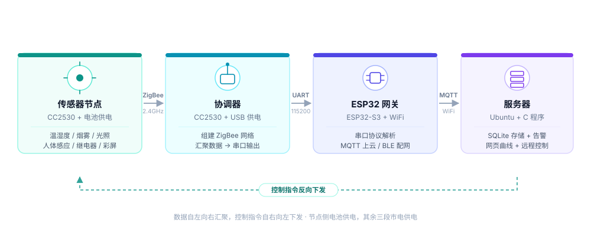
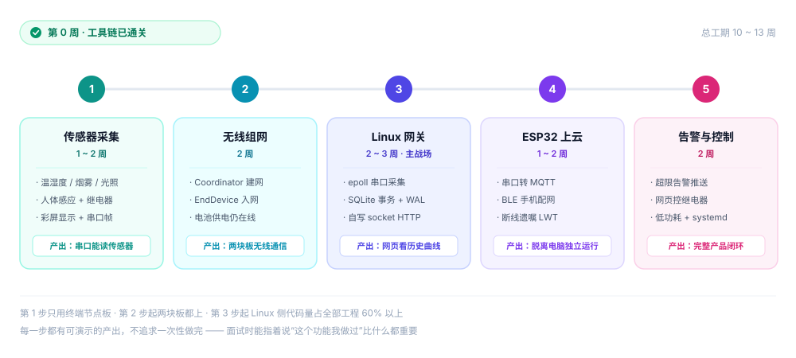

手里有一堆硬件：两块 CC2530 开发板、一个 CC-Debugger、一套 Ubuntu 虚拟机。 问题是——这些东西能拼出一个什么样的项目？
这篇记录从「有什么」到「做什么」的收敛过程：最初列出四个候选方案， 最后只留一个；以及留下的这个到底要做出什么效果。
一、项目的一句话定义
这句话里其实是四个技术层次： 嵌入式裸机开发、无线通信协议、网关协议转换、Linux 服务端开发。 选它当主项目就是因为一条链路能把四层全串起来——任何一层偷懒，整条链路都跑不通。
二、四层架构

| 层 | 角色 | 干什么 | 技术要点 |
|---|---|---|---|
| 感知层 | 终端节点 | 采集数据、执行命令 | ADC、单总线、GPIO、低功耗休眠 |
| 网络层 | 协调器 | 组建 ZigBee 网络、汇聚数据、串口送出 | IEEE 802.15.4、Z-Stack、自定义帧协议 |
| 网关层 | ESP32-S3 | 串口协议解析 → MQTT 上报；接收下行命令 | ESP-IDF、MQTT、BLE 配网、LWT 遗嘱 |
| 应用层 | Ubuntu 服务器 | 存库、告警、网页展示、命令下发 | termios/epoll 事件循环、SQLite WAL、手写 HTTP、告警状态机 |
为什么中间要加 ESP32 网关
CC2530 本身不能直接上网。协调器只能把数据从串口吐出来，所以需要一个「能上网的东西」转一手。 可选方案有几种：树莓派、ESP8266、ESP32。
- 树莓派：太贵太重，而且它本身就是台 Linux 主机，跟服务器角色重复了
- ESP8266：只有一路双向 UART，接串口的同时就没法干别的，做网关能力上限太低
- ESP32-S3：双核 + 16MB Flash + 8MB PSRAM，一路 UART 收数据、另一核跑 WiFi/MQTT，盈余充足
更重要的是，ESP32 这一层真正值得做的不是「加个 WiFi」，而是两件真实产品绕不开的事： MQTT 遗嘱机制（LWT）——设备掉线时 broker 自动广播离线消息，这是真实产品的必备能力； BLE 配网——手机把 WiFi 密码传给设备，而不是写死在固件里。
三、六个可演示的功能
项目最怕「做完了但说不清做出了什么」。所以功能必须是能打开给人看的。 这六条每一条都能现场演示，也都能拍成短视频。
| # | 功能 | 怎么演示 | 用到的技术 |
|---|---|---|---|
| 1 | 实时监测 | 网页上看到当前温湿度/烟雾/光照/人体状态，一秒刷新 | 串口采集 + HTTP 轮询 |
| 2 | 历史曲线 | 拖动时间轴看过去 24 小时的温度变化折线 | SQLite 存储 + 前端图表 |
| 3 | 超限告警 | 打火机靠近 MQ-2，蜂鸣器响 + 网页标红 | 阈值规则 + 环形队列 |
| 4 | 远程控制 | 网页点「开」，板载继电器吸合，接的灯泡亮 | 下行命令帧 + GPIO 输出 |
| 5 | 本地显示 | 不联网、不开电脑，彩屏上照样显示四个传感器值 | SPI 驱动 1.44" TFT |
| 6 | 电池续航 | 拔掉 USB 只装电池，数据照常上传，测出能跑几小时 | 低功耗模式 + 周期唤醒 |
第 6 条是很多人会跳过的，但它恰恰最能体现「这是产品不是玩具」。 一块只能插着 USB 跑的开发板，和一块装两节电池能在房间角落跑一天的节点，说服力完全不同。
四、砍掉的三个方案
最初列了四个候选，最后只留一个。砍掉的理由都很实际：
| 候选方案 | 为什么砍掉 |
|---|---|
| STM32F103 做两轮自平衡小车 | 硬件现成，但能力模型太单一——只锻炼 MCU 控制与 PID， 碰不到无线组网、碰不到服务端。与 IoT 应用开发岗的能力要求重叠度低。 |
| RS485 / Modbus 工业数据采集 | 工业自动化方向的典型技能，但它解决的是「长距离、有线的现场总线」问题， 跟我这套短距无线感知的场景不是一回事。时间有限，先投在能串成完整链路的地方。 |
| ESP8266 单点联网（传感器直连 WiFi） | 做出来是「一个联网的温度计」，没有网络拓扑、没有网关、没有协议转换， 技术深度不够。单 UART 也决定了它没法当网关。 |
| ZigBee 无线环境监测系统 | 选中 覆盖「节点 → 组网 → 网关 → 服务端 → 前端」全链路， 硬件已全部备齐（含 ESP32-S3 与电池盒）。 |
选项目的标准不是「难不难」，而是「做完之后能讲清楚多少个具体的决策」。 自平衡小车把 PID 调好很酷，但能展开的只有「调参」； 而 ZigBee + MQTT + Linux 服务端这条链路上，每一环都有绕不过去的取舍—— 帧格式要不要加校验、命令用广播还是单播、落库批量提交还是逐条写、 实时曲线从库里查还是走内存。这些才是做完之后真正留在手上的东西。
五、五步实施路线

拆成五步而不是一次性做完，是因为每一步都必须能独立演示。 这样即使后面某一步卡住，前面的成果依然完整、依然能拿出去说。
| 步骤 | 做什么 | 工期 | 完成标志 |
|---|---|---|---|
| 0 | 工具链搭建与冒烟测试 | — | 已完成 串口打出自己写的固件 |
| 1 | 传感器采集 + 彩屏显示 + 串口打印 | 1~2 周 | 已完成 串口能看到四路传感器数据 |
| 2 | 协调器 + 终端组网 | 2 周 | 已完成 拔掉 USB 只插电池，协调器仍收到数据 |
| 3 | Ubuntu 写 C 网关服务 | 2~3 周 | 已完成 浏览器打开网页能看到实时曲线 |
| 4 | ESP32 独立 WiFi 上云 | 1~2 周 | 已完成 两条链路并行落库，同一时刻数值可互相对账（156 帧零解析失败） |
| 5 | 告警 + 远程控制 + systemd + 历史曲线 | 2 周 | 已完成 告警 + 远控 + systemd + 历史曲线全部上线；低功耗决定不做 |
六、Linux 侧的分量
如果只是「用 Python 读串口存进 SQLite，再用 Flask 起个网页」，那 Linux 部分大概只有两百行， 跟这套项目里「服务端要占大头」的定位对不上。
所以第 3 步设计成一个真正的 C 服务 gw——
不用任何 Web 框架，从 socket() 开始自己写。
原本打算用五线程，最后写成了单线程
最初的设计是「采集 / 存储 / 告警 / HTTP 各一个线程，用环形队列串起来」， 职责划分得很清楚，也符合一般服务端程序的习惯：
| 原计划线程 | 职责 | 关键技术 |
|---|---|---|
| 采集 | 读串口、拆帧、送环形队列 | termios raw、USB 掉线重连 |
| 存储 | 批量写 SQLite、事务提交 | WAL、预编译语句 |
| 告警 | 规则判断、触发标记 | 条件变量唤醒 |
| HTTP | 响应网页请求 | 手写 socket 解析 HTTP |
真动手之后改了主意，最终是单进程单线程：
串口 fd、信号 fd、HTTP 监听 fd、每条 HTTP 连接 fd，
全部注册进同一个 epoll，一个循环处理完。没有线程、没有锁、没有跨线程队列。
并发度用不上就先别上——但要知道怎么上，这是两回事。
实际的模块划分（每个 .c 一个职责，全部挂在同一个事件循环里）：
| 模块 | 职责 | 关键技术 |
|---|---|---|
gw_serial |
串口非阻塞读写、拔插重连 | termios raw 模式、O_NONBLOCK、EPOLLHUP 重连 |
gw_frame |
24 字节定长帧解析 | 帧头匹配、字段范围校验、滑动窗口重同步 |
gw_db |
落库与历史查询 | SQLite WAL、预处理语句、批量事务、AUTOINCREMENT |
gw_latest |
进程内最新值快照 | 0 延迟，绕开事务隔离给网页提供实时数据 |
gw_filter |
中值滤波、自适应基线 | 五点中值、余数累积 EMA（防整数死区） |
gw_alarm |
告警状态机 | 相对倍数判据、迟滞、连续确认、告警中冻结基线 |
http_srv |
内置 HTTP 服务 | 裸 socket + epoll，网页编进二进制，无外部依赖 |
信号处理用 signalfd 把信号转成 fd 交给 epoll 统一处理，
避免异步信号安全问题；退出时先提交未落盘事务再关库。
systemd 托管已做完：Restart=always + 开机自启 + journald，
实测 kill -9 后 3 秒自动拉起。
七、技术栈总览
| 领域 | 技术 | 掌握程度要求 |
|---|---|---|
| MCU 开发 | CC2530（8051 内核）、寄存器级 GPIO/ADC/UART | 能手写驱动 |
| 无线协议 | IEEE 802.15.4、ZigBee、Z-Stack 2.5.1a、OSAL | 理解组网流程与地址分配 |
| 应用协议 | 24 字节定长帧、字段范围校验、滑动窗口重同步 | 能设计并实现帧同步 |
| 网关 | ESP32-S3、ESP-IDF、FreeRTOS | 任务划分与队列通信 |
| 物联网协议 | MQTT 3.1.1、QoS、遗嘱、保活 | 理解 broker 行为 |
| Linux 系统编程 | termios、epoll、signalfd、单线程事件驱动 | 能手写事件循环 |
| 数据存储 | SQLite（WAL、事务、索引） | 理解写入性能优化 |
| 网络服务 | HTTP/1.1 报文解析、socket API | 不依赖框架手写 |
| 运维 | systemd unit、journalctl、日志轮转 | 能部署并查故障 |